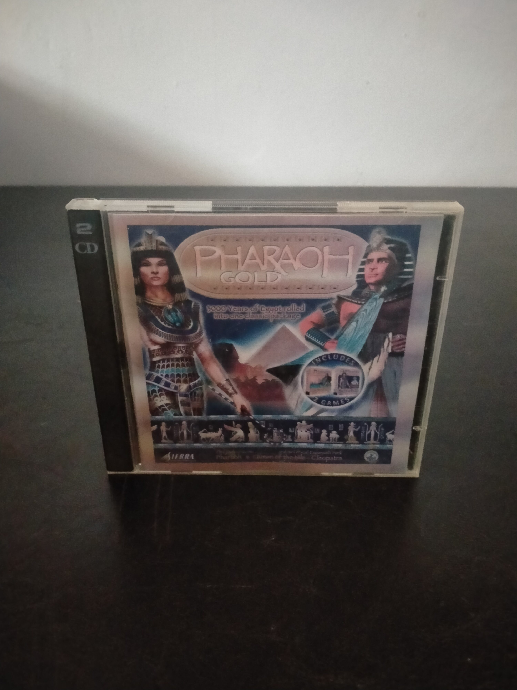

Ficha #000000
Pharaoh Gold
Pharaoh Gold es una edición recopilatoria que reúne Pharaoh y su expansión Cleopatra: Queen of the Nile en un único lanzamiento físico de dos CD-ROM. Desarrollado a partir del motor y la fórmula de construcción urbana de Caesar III, permite levantar y administrar ciudades del Antiguo Egipto mediante la planificación de viviendas, agricultura vinculada a las crecidas del Nilo, producción, comercio, religión, defensa y construcción de monumentos. La expansión añade nuevas campañas, edificios, recursos, enemigos y desafíos históricos asociados a periodos posteriores de la civilización egipcia. Esta edición en jewel case conserva en un solo paquete la experiencia completa de uno de los city builders históricos más representativos de Impressions Games y Sierra a finales de los años noventa.
- Formato
- Jewel Case
- Plataforma
- Win95 Win98
- Género
- Construcción de ciudades Estrategia Gestión Simulación histórica Compilación
- Serie
- Todos Jewel Case
- Desarrollador
- Impressions Games, BreakAway Games
- Distribuidor
- Sierra Studios
- EAN
- —
Contenido de la edición
- Estuche jewel case doble
- 2 CD-ROM
- Carátula frontal
- Carátula trasera
Preservación
- Protección
- No determinado
- Formato recomendado
- BIN/CUE
- Jugable en virtualización
- Sí
Preservar ambos CD-ROM mediante imágenes completas y conservar el orden de instalación del juego base y la expansión. Al no haberse verificado la protección de esta edición concreta, se recomienda emplear BIN/CUE para documentar la estructura original de cada disco y probar la instalación en un entorno Windows 95/98 virtualizado.